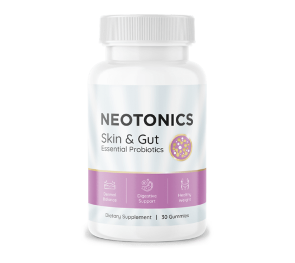

Neotonics
Product profile · Marketplace data 2026-10-09 · Sales-page research 2026-10-09 · Categories: Food Supplements

Marketplace record
| Product type | Supplements - health |
|---|---|
| Price | $205.10 (Single payment) |
| Affiliate commission | 55% |
| Refund window | Per the vendor's sales page — check the official page before buying |
| Vendor | Neotonics (listed since 2024-02-08) |
| Marketplace stats* | Cart conversion 2% · cancel rate 18.14% · affiliate earnings/sale $115.26 |
* Vendor-side marketplace statistics reported by Digistore24; they depend on traffic quality and are not a forecast.
Vendor's marketplace description
DigiStore Says Hello To These Revolutionary Skin-Gut Gummies That Target The Root Cause of Skin Aging. Skyrocketing Conversions On All Types Of Traffic. Top Affiliates Are Already Ripping The Benefits, Reporting Up To $7 EPC!
From the vendor's sales page
Page title: Neotonics - Text Presentation
Meta description: Neotonics - Text Presentation
Headline
Inside every "Neotonics" Gummy you'll find:
Order 6 Bottles and Get 2 FREE Bonuses!
Every 6 Bottles Order Gets FREE Shipping Too!
Section headlines
- Skin Cell Turnover: The Key To Understanding And Treating Skin And Gut Issues
- Scientists Discover The Root Cause Of Aging Skin
- Sarah Flake is shocked by the changes she saw.
- Alexa M. loves her new skin.
- Kathy Myers still can’t believe what she sees in the mirror.
- Claim Your Discounted Neotonics Below While Stocks Last!
- 100% Satisfaction 60 -Day Money Back Guarantee
- Frequently Asked Questions
- Claim Your Discounted Neotonics Below While Stocks Last!
Opening copy
Cell turnover is the continuous process of shedding dead skin cells and subsequently replacing them with younger cells. This essential process makes our skin look shinier and tighter, and gets rid of fine lines and wrinkles more quickly.
Medical researchers have recently demonstrated that cellular turnover is controlled by the gut, its microbiome, and nutrient absorption. Simply put, when your gut starts aging, the digestion and nutrient absorption slow down. As a consequence, the cellular turnover slows down and your skin starts aging too.
Neotonics is the only formula that contains 500 million units of extra-strong bacteria and 9 potent natural ingredients that target the root cause of skin aging: the gut microbiome.
Prices mentioned on the page: $79 · $89 · $15.95
CTA buttons: “Get Started”
Research method: raw HTML fetch · 2131 words on page · quality: rich · researched 2026-10-09. Full research file (MD) ↗
Where to check it out
Read the vendor's full sales page (current price, guarantee terms and bonuses are listed there):
View official sales page
That link is an affiliate link — if you buy through it we earn a commission from the vendor at no extra cost to you.